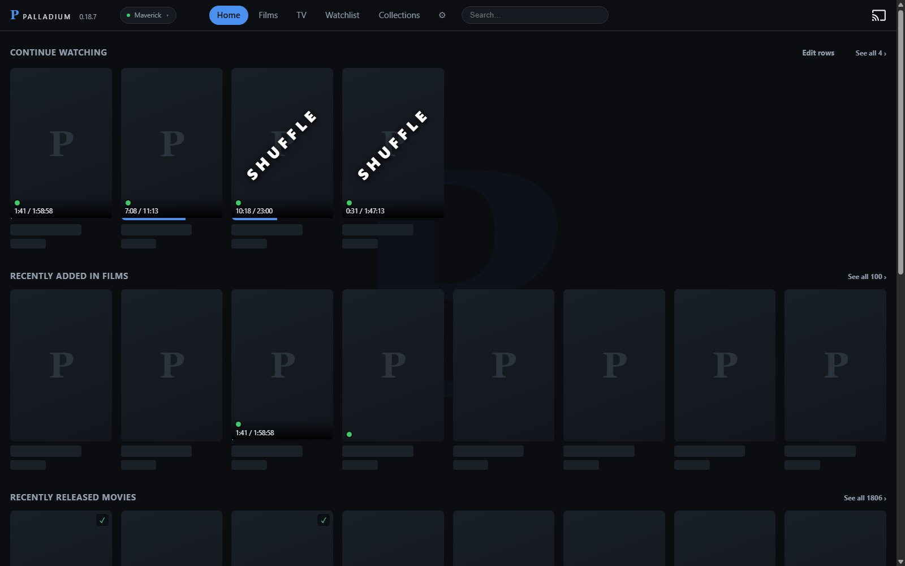
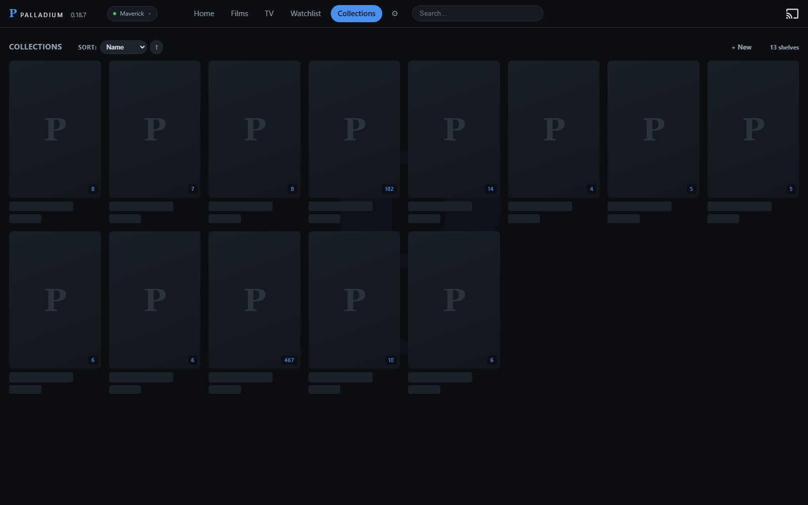
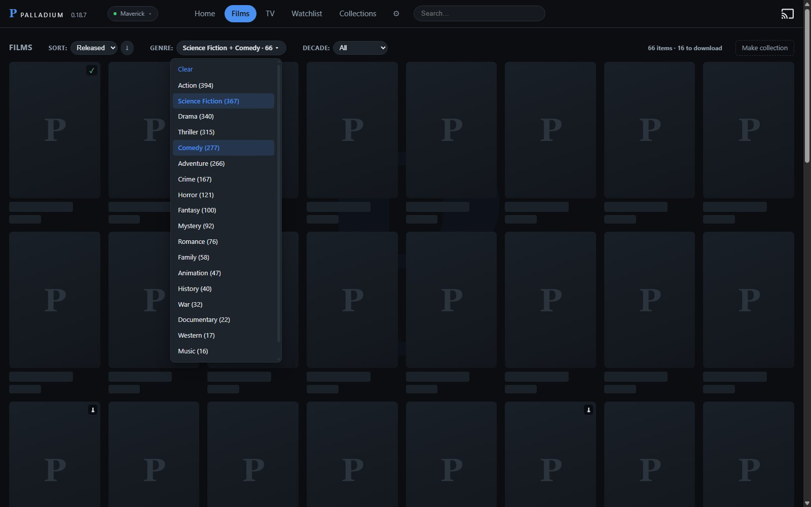
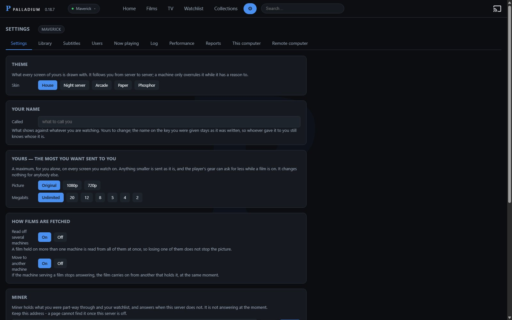

What it does that others do not.
Most of a media server is the same everywhere: read the folder, find the artwork, send the file. These are the parts that are not.
What it does
Free software, under the GNU Affero General Public License v3. Use it, change it, share it; a changed version given to anybody else, or run as a service for other people, has to carry its source under the same terms. The text, and the repository.
Fetched from OpenSubtitles by release name: the one named after your file leads the list, and a hash match whose name is for another release is marked rather than trusted. Timing is measured against the film's own audio and corrected. What carried an episode to the end is remembered for the series and fetched for the next one before it starts.
Point another computer at this one and it keeps a copy of what is on the watchlist and what is being watched, copied in the hours the first machine is asleep. When the first is off, the second answers in its place - the same library, the same places kept.
A release that counts a double-length premiere as two episodes is one ahead of the database for the rest of the season. The titles in the filenames are compared against the season's own, and the episodes are renumbered when four or more agree - so every later episode keeps its own title, plot and subtitle search instead of the next one's.
A torrent pack puts its films in the library, greyed until somebody fetches one. Download takes that film alone through qBittorrent, one at a time in the order asked, with how far, how fast and how long on its poster, its page and the menu; it joins the library by itself once it has arrived.
Matched against TMDB by title and year rather than by whichever answer is most popular, so a remake does not take the original's entry. A name spelt as the release spelt it is asked for in shortening steps, and the year decides which answer it is.
A rule rather than a list: words that must appear, words that must not, and what kind of thing it holds. Releases added later join by themselves; a title can still be pinned in or struck out by hand.
Mark as many genres as you like: the shelf keeps what carries all of them, and the button says how many that is.
The file is sent untouched wherever the screen can take it. Where it cannot - a browser that will not read the codec, a picture subtitle that has to be drawn into the image - it is converted on the way out, on the graphics card if there is one. Which of the two is happening is said while it plays.
An invitation is a link. Each guest keeps their own place in every film, sees nothing else, and can be watched and stopped from the Now playing screen.
Any browser, an Android phone, and a television - the app pairs with a five-character code. Chromecast and AirPlay where the device offers them.
Filenames are parsed for title, year, season and episode; ffprobe reads codecs, resolution, channels and every track inside the file. New downloads are noticed by themselves - the folder is watched, and a file is read once it stops growing.
The app updates itself. The server says which build it is running against what the site publishes, and installs the new one when asked.
Worth having
Speech in the film's own audio is found and the subtitle is moved onto it. One offset, a drift, or a number for each part of the film, applied before playback and kept for that file.
With a second machine holding copies, a film whose source goes away moves to the other one mid-play and keeps its position - a few seconds of buffering rather than an evening ending. Where both machines hold the file and neither has to convert it, the app reads from both at once and splits the file between them.
Candidates are ranked by release name, not by how many people took them: the subtitle named after your file leads the list. A hash claim whose name is for another release is marked and pushed down rather than trusted - the hash is a file size and its first and last 64 kB, attached by hand at upload, and it is wrong often enough to matter.
What carried an episode to the end is what the series keeps. Five minutes before an episode ends the next one's subtitle is fetched, so it is beside the file before it starts.
A release that counts a double-length premiere as two is one ahead of the database for the rest of the season, and every episode then carries the next one's title, plot and subtitle search. The titles in the filenames are read and the episodes are put back on their own numbers - listed in Settings, with the last word yours.
What somebody is watching now goes first, then the watchlist, then the rest, and copying keeps to the night hours so it is not competing with anybody watching. Each series is kept from the episode being watched forward, up to Episodes ahead and Hours ahead for each person, so one more is copied for each one watched; when the disk fills, what goes is the oldest or the largest, whichever you chose.
Size and position are a share of the picture rather than of the panel, so a phone and a television agree. On a scope film the text sits on the picture's own bottom edge, and with zoom it moves down to the frame with it.
A rule, not a list: words that must appear, words that must not. Try it before saving and the posters wash green and red for what it takes and leaves; releases added later join by themselves.
The database answers in the order people looked things up, which puts a sequel above the film you have. Title and year are asked first, so a remake does not take the original's entry - and a name spelt as the release spelt it is asked for in shortening steps.
Any collection plays shuffled, films and episodes drawn together. The round is kept: what has been drawn stays out until the shuffle is ended, and it carries on where it got to. In Continue watching it is one card for the collection, not one per episode, and Next in the player draws again. The next draw's subtitles are fetched before it starts, and a second machine can keep the next few ready.
An invitation is a link with a name on it. Each guest keeps their own place in every film and sees nothing else; Now playing says who is watching what, from where, and can stop it.
Direct play or transcode, said while it plays. A watch log, hours by person, and a screen listing every client that has asked this server for anything today with the build it is running.
Built on
Python 3.13 with nothing but the standard library, compiled to native code for release. SQLite for the index. Runs as a tray icon on Windows 10 or 11, per user, no service and no administrator - or as a container on Linux, with ffmpeg inside it and one volume for everything it writes.
ffmpeg and ffprobe. Hardware encoding on NVIDIA (NVENC), AMD (AMF), Intel (Quick Sync) and Apple (VideoToolbox) - whichever the machine actually has, chosen by asking each one to encode a frame. Software x264 when there is none.
Byte-ranged direct play for a file the screen can read; a live-segmented transcode when it cannot, at the bitrate and height that screen asked for. Burned-in subtitles only for picture formats a client cannot decode.
Kotlin and Jetpack Compose, one build for the television and the phone. Media3 (ExoPlayer) for playback, with cues drawn by the app so size and placement are the same as in the browser. Pairs with a five-character code.
Plain JavaScript, no framework and no build step. HTML5 video for direct play, dash.js for adaptive streams, WebVTT for subtitles, Chromecast and AirPlay where the browser offers them.
TMDB for titles, artwork and episode lists, cached on disk. OpenSubtitles for subtitles, matched by release name and by the moviehash of the file.
Inno Setup, 32 MB, per-user, upgrades in place and keeps settings, invitations and the index. ffmpeg is fetched on first run rather than carried, which is what keeps the download small.
How it looks
The browser client, with the artwork left out.

Collections
A collection is a rule rather than a list: words that must appear in the title, words that must not, and what kind of thing it holds. Anything added to the library later that answers the rule joins by itself, and any title can be pinned in or struck out by hand.

Several genres
Mark as many genres as you like, in the browser and in the app. The shelf keeps what carries all of them, films still to download among the rest, and the button says how many that is. A narrowed shelf can be kept as a collection, and what is added later joins it.

Subtitles, set once
Size, face, colour, background and position, kept per screen and shared by every client - a television and a phone disagree about what 100% means, so the number is a share of the picture rather than of the panel. Subtitles are fetched by release, checked against the file, and remembered for the series they belong to.

What it does not do
- Move, rename or alter a file.
- Upload anything, or ask for an account.
- Provide anything to watch: the library is what is already on the disk.
- Convert a film the screen can play as it is.